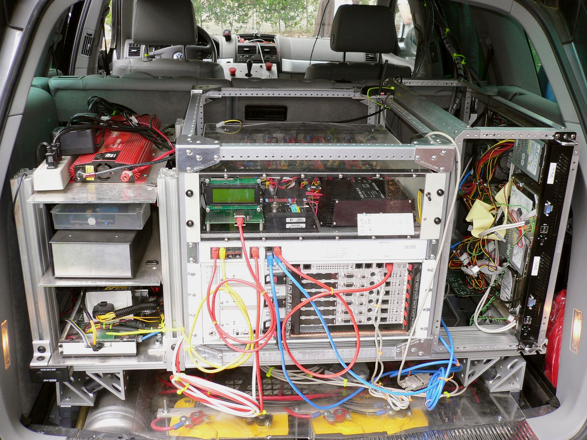

The AI Innovator's Dilemma
What Do You Do With a Tool That Can Do Anything?
"The same forces that made incumbents powerful now prevent them from going AI-first."
Philip O'Donnell · Jax Tech · January 2026
The Promise vs. Reality
✨
The Promise
"AI will transform everything"
Glowing keynotes, infinite potential
📊
The Reality
Underwhelming pilots
Beige dashboards, 6-month timelines
Why? It's not the technology.
It's structural.
Why Now: AI Crossed a Threshold
80%
95%
100%
"Good enough"
Same business
Different
business
95% → 100% is not 5%.
It's a new company.
This is where startups win.
The Hero's Journey of Enterprise AI
And where it breaks down
1 · SCOPE PROBLEM
"Won't fully cross"
Enterprise
AI Journey
2 · UPSIDE DOWN
"Unfamiliar world"
4 · SACRIFICE
"Must let go"
3 · SHORTEST PATH
"Tempted to flee"
Enterprises fail at 4 specific moments. Startups skip the journey entirely.
They never fully cross the threshold.
Enterprise
Entire process scope
Stops at diminishing returns
Startup
Narrow slice only
Serves nonconsumption
- Diminishing returns create a ceiling at 80-95%
- Startups pick slices; enterprises run everything
- Serve customers below the "$50K floor"
The unfamiliar world is ugly and uncomfortable.

"This won the 2005 DARPA Challenge. Ugly. Necessary."
- Hybrid handoff systems don't exist — you build them
- Legacy wasn't built for AI; AI wasn't built for legacy
- The throwaway code becomes permanent before you notice
$30M revenue · $1M AI investment · Creates 10% efficiency ($3M savings)
✂️
Cut Costs
Save: $3M in labor costs
Profit impact: +$3M (100% to bottom line)
Timeline: This quarter
Certainty: ~95%
📈
Invest in Growth
Keep: $3M capacity, chase revenue
At 60% gross margin: Need $5M new revenue
That's: 17% growth to break even
Certainty: ~35%
The Math
$3M saved = $3M profit (certain)
$3M reinvested ÷ 60% margin = need $5M revenue (speculative)
Cost cutting is 17% growth — guaranteed, today.
To return transformed, you must leave behind:
👥
Existing Customers
They want the old way
💰
Current Revenue
It pays the bills
⚙️
Legacy Processes
They define who we are
Enterprises can't sacrifice.
Startups have nothing to sacrifice.
That's why startups win.
The Long Tail: More Barriers
These compound with the four main barriers
The Framework: Finding Your Opportunity
1
PROCESS
→ AI can do 100%
2
MARKET
→ Incumbents can't serve
3
IMPROVEMENT
→ 10x, not 20%
4
STRENGTHS
→ Text, async, scale
Each filter narrows to your opportunity.
Example: Recruiting Under $50K
|
Incumbent |
AI Startup |
| Market |
Won't touch <$50K salary
(commission = $5K) |
Only serves <$50K
(price = $500) |
| Channel |
Phone, meetings, high-touch |
Text, email, 100% async |
| Defense |
Can't respond: margin compression |
Protected by: their own margins |
What's the "$50K floor" in YOUR industry?
Why Incumbents Won't Just Copy You
🏰 YOUR MOAT 🏰
Margin Trap
Can't lower margins without destroying valuation
Loss Leader Trap
Can't sustain losses in non-core segments
Bundle Trap
Can't unbundle without threatening core
The harder it is to build,
the safer you are.
Your Domain Advantage
You know your industry's pain points
better than any AI researcher.
What's the "$50K floor" in YOUR industry?
Find the process. Find the underserved market. Build AI-first.
Sources
- Clayton Christensen, The Innovator's Dilemma
- Innosight, Dual Transformation
- a16z, "AI Wedges"
- Bain, "Defending Against Disruption"